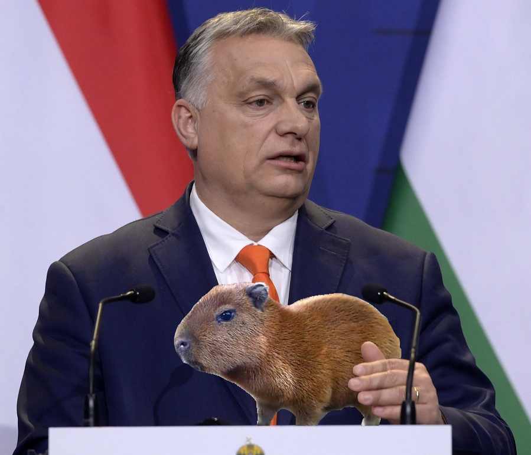
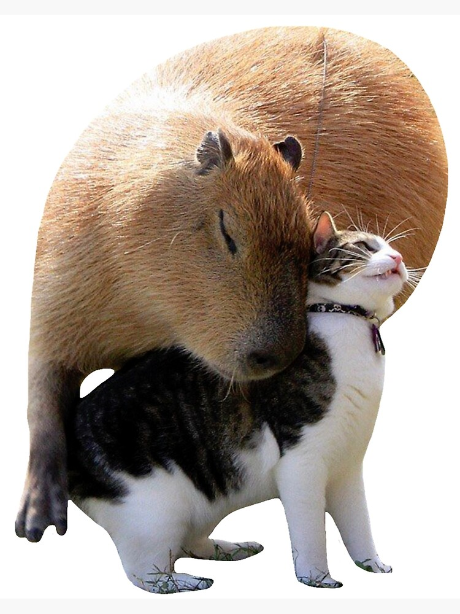
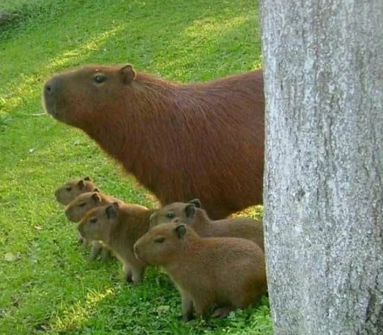
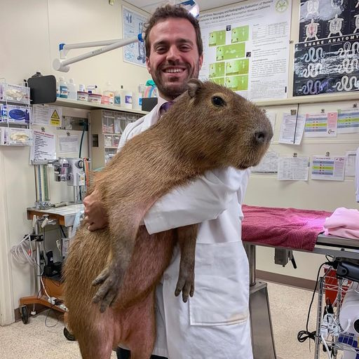
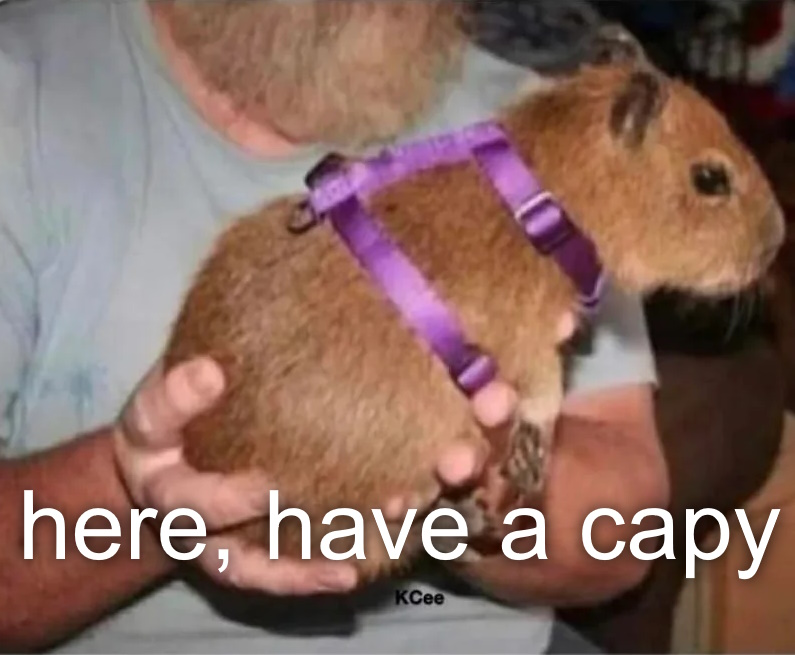

A vízidsznók (kapibarák) főleg az internet, de minendki által kedvelt állatok, és érthetően mindenki akar egyet házi állatnak. De mit érdemes tudni, ha Magyarországon tartani akarunk egyet?
Kapibara, mint háziállat
Legalitás
Egy ilyen ritka és egzotikus állatnál legtöbbnek az első kérdése, hogy szabad-e tartani? Magyar államprolgárként büszkén jelentem, hogy hazánkban legális vizídisznók tartása háziállatként.
De akarunk tartani? - Kapibara, mint háziállat
Bár elsőre nem gondolnánk, de a a kapibarák - mint más rágcsálók (például tengerimalacok, hörcsögök) - kifejezetten "háziasak"; Nyugott és szociális állatok, szeretik az emberek (és más állatok) társaságát.
Tartása és környezete
Kissebb "házirágcsálókkal" (például hörcsög, tenegrimalac), a kapibarákat nem lehet egy fél m2-es ketrecben tartani szinte egész életükben, ennél sokkal nagyobb és speciálisabb környezetet igényelnek. Szükségük van egy tágas, kültéri füves környezetre napos és árnyékos részekkel egyaránt. Egy átlagos kertes hát kertje valószínűleg megfelelő, de természetesen mindig lehet javítani például több növényzettel, mászókákkal, stb. A fenti feltételek miatt panelházban egyértelmáen nem lehet tartani.
Diéta, étrend
A kapibarák étrendje viszonylag egyszerű és szokványos, mint minden rágcsáló, főleg füvet, szénát és friss zöldségeket esznek.

Állatorvosi igény
Mint minden egotikusabb (nem a hagyományos kutya, macska, esetleg hörcsög csoport része) állatnál, az állatorvosi igények jelentősen bonyolultabbak, mint mondjuk egy kutyánál, amit minden mezei állatorvos rutinból vizsgál meg. Mindenképpen nézzünk utánna megfelelő, kapibarákhoz értő állatorvosnak, és csak akkor szerezzünk be egy kókuszkutyust, ha tervezett és nem tervezett álatorvosi igényeit megelelően ki tudjuk elégíteni.
Kapibara beszerzése
Hogyha végül úgy döntönk, beszerzünk egy ilyen jószágot háziállatnak, fontos, hogy megfelelő helyről vegyök/fogadjuk örökbe a jövendő legjobb barátunkat. Mindig megbízható tenyésztőket keressünk, vagy jó helyről fogadjunk örökbe.
Konklúzió
A kapibarák jó háziállatok lehetnek azoknak, akik valami egzotikusabb állatra vágynak, nagyon specifikus igényeik vannak, ezért nagyon fontos, hogy pontosan utánnanézzünk, hogy milyen igényeik vannak, és megfelelően ki tudjuk-e elégíteni őket.
